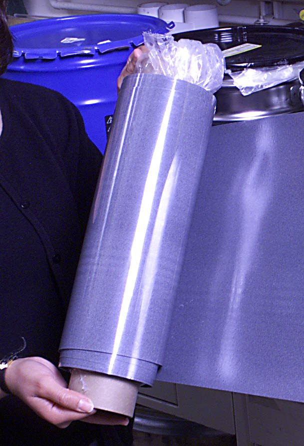
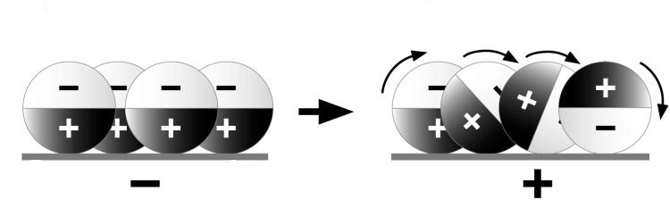
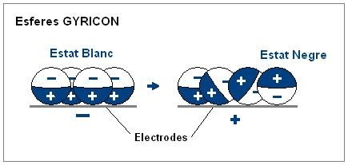

1975
Xerox Palo Alto Research Center (Nicholas Sheridon)
Xerox PARC Gyricon Electronic Paper
A flexible sheet of millions of black-and-white balls that tumble in oil to hold a picture on zero power

Overview
Deep dive
Team & pioneers
- Nicholas Sheridon. Inventor; physicist at Xerox PARC who conceived Gyricon as electronic paper in the mid-1970s.
- Xerox Palo Alto Research Center (PARC). The laboratory where Gyricon was developed.
Media

